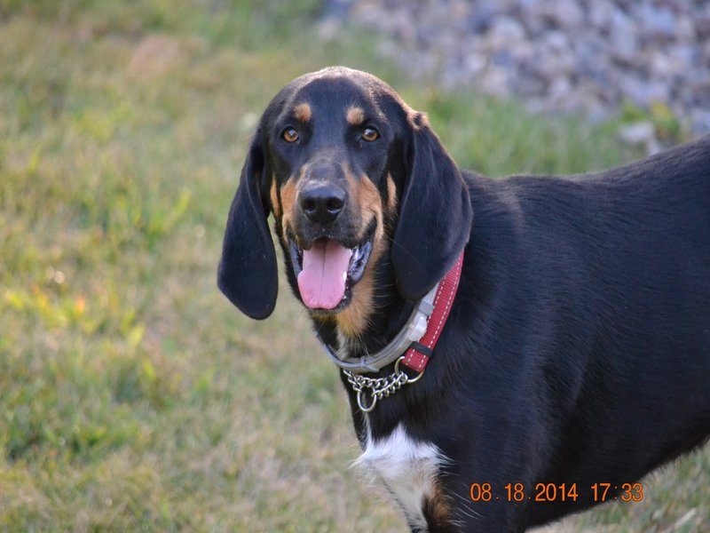

RayRay
RayRay was undersized and had been abused. She was sweet but fearful around strangers. We started fostering her in October of 2013. With alot of love and hard work she put on 20 pounds and became much more trusting of people. She was adopted in Febuary of 2014,